Two independent systems: a Faster R-CNN fine-tuning loop (and the real MPS bug that forced it onto CPU), and a greedy IoU tracker’s frame-by-frame matching and pruning logic.

| Node | Location | What it does |
|---|---|---|
| DEVICECHECK | config.py | Deliberately excludes MPS even though it's available on this Mac — a direct, reproduced finding: MPS training on this model produced NaN losses; CPU training with identical code did not. |
| SCORECHECK | evaluate.py:evaluate_mean_iou() | Predictions below SCORE_THRESHOLD (0.5) confidence are filtered out before IoU matching — a low-confidence box shouldn't count as a correct detection even if it happens to overlap the ground truth. |
| PAIRLOOP / THRESHCHECK | tracker.py:IoUTracker.step() | Greedy matching: sort every (track, detection) pair by IoU, claim the highest-IoU pairs first, stop entirely once IoU drops below iou_threshold (0.3) — remaining pairs are too weak to be the same object. |
| PRUNE | tracker.py:IoUTracker._prune() | A track survives being unmatched for up to max_missed (3) frames (tolerating brief occlusion) before being dropped — this is what distinguishes a real, briefly-occluded object from a one-off false detection. |
Identical model, identical data — CPU forward pass produces finite losses; MPS training diverges to NaN by end of epoch 1. Diagnosed by isolating a single-sample CPU forward pass before suspecting the backend.
DEVICECHECK(MPS available) → CPUFORCED(excluded anyway) → training converges 0.25→0.10 lossAn object missing for 2 frames (within max_missed=3) reappears and is matched back to its EXISTING track ID, not assigned a new one — the actual point of tolerating missed frames.
step([]) → MARKMISSED → step([]) → MARKMISSED → step([reappears]) → MATCHLOOP → same track_idGets its own track ID at creation (the tracker can't know it's spurious yet) but is never re-matched — its history length of 1 is exactly the signal a real system would filter on.
step([real, spurious]) → CREATEALL(spurious → new track) → step([real only]) → spurious track: MARKMISSED → eventually PRUNEdmax_missed frames before dropping a track.SCORE_THRESHOLD) before IoU matching, so a low-confidence box overlapping the ground truth doesn't count as a correct detection.The systematic approach: first confirm it's actually a numerics issue and not a data issue by running the exact same batch through both backends and diffing intermediate outputs layer-by-layer (register forward hooks, compare activations after each module) — the layer where CPU and MPS outputs first diverge meaningfully (not just floating-point noise) is your suspect. I isolated it by dropping to a single-sample forward pass specifically because a full batch obscures which sample or which layer first produces a NaN — reducing the surface area is the key move; from there you'd check for known MPS gaps (certain reduction ops, mixed-precision paths) against the PyTorch MPS issue tracker rather than assuming it's your model code.
The decision hinges on blast radius and reproducibility: if I can produce a minimal, backend-agnostic repro (a small script, no project-specific code) that shows the divergence, that's worth filing upstream regardless of what I do locally, because other users will hit the same wall. Locally, the decision is about timeline and risk tolerance — CPU-forcing was the right call here for a portfolio project with a hard deadline and no requirement for GPU throughput, but for a production training pipeline that actually needs MPS's speed, I'd weigh the cost of waiting for an upstream fix against workarounds like mixed-precision toggling or op substitution, and file the upstream issue either way so the fix eventually lands.
Concrete case: three tracks and three detections where greedy claims the single highest-IoU pair first (say track A to detection 2), which then forces the remaining two tracks into a worse combined assignment than if the algorithm had considered all three pairings jointly — the Hungarian algorithm would find the assignment that minimizes total cost (or maximizes total IoU) across all pairs simultaneously, which greedy doesn't guarantee. I didn't require Hungarian here because greedy is O(n log n) versus Hungarian's O(n³), is far simpler to implement and debug, and for the small, mostly-well-separated object counts this demo's synthetic scenarios use, the assignment quality difference is negligible — I'd switch to Hungarian (scipy has a built-in implementation) the moment real footage showed greedy producing visibly wrong assignments under crowding.
It matters whenever two tracked objects cross paths, occlude each other, or move close enough that their bounding boxes' IoU-based association becomes ambiguous — pure geometry has no way to tell 'the person who was on the left is still the person on the left' versus 'they swapped' once their boxes overlap and separate. For a real deployment (retail analytics, traffic counting) I'd add a lightweight appearance embedding (a small ReID CNN or even a simple color-histogram feature) computed per detection, and extend the matching cost to combine IoU with embedding similarity — this is the standard approach in DeepSORT-style trackers, and it's specifically the crossing-paths case where it earns its extra compute cost.
Filtering first means the tracker's matching logic only ever considers detections the model is actually confident about, so a spurious low-confidence box never gets the chance to steal a good IoU match away from the real detection or spawn a bogus new track. If you matched first and filtered after, a low-confidence false detection with high geometric overlap could win the greedy match against the correct high-confidence detection (since greedy sorts by IoU, not by confidence), incorrectly updating a track with garbage, or a low-confidence detection could still spawn a short-lived phantom track before being filtered — filtering upstream of matching is strictly safer and is the same reasoning that puts SCORE_THRESHOLD filtering before the greedy matching loop in this project's code.